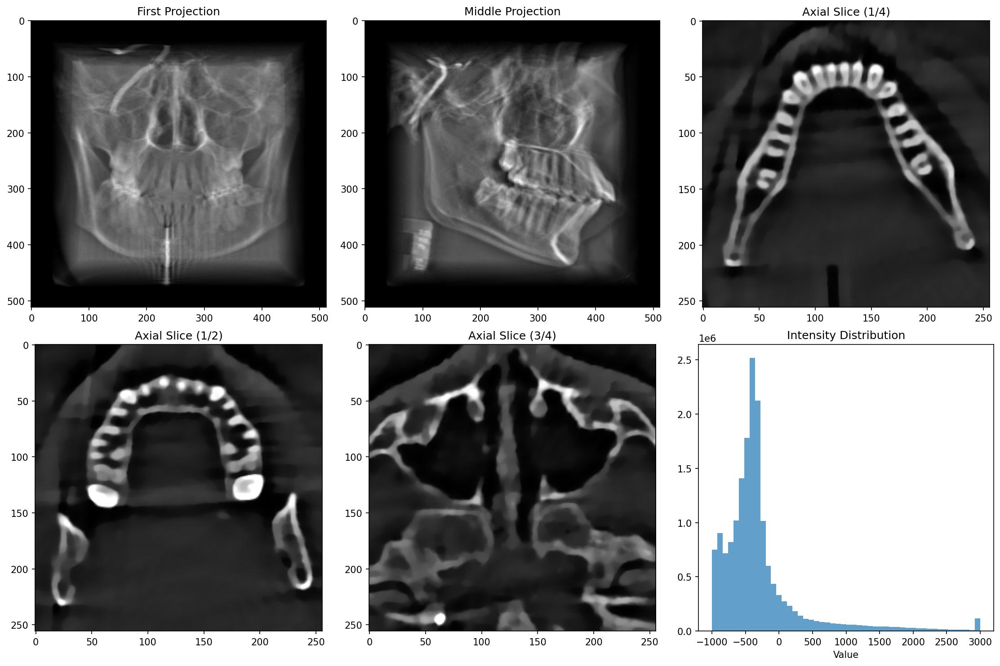

Anatomy-Aware Neural Attenuation Fields
Working on neural and physics-based CT reconstruction methods, combining classical reconstruction algorithms with neural attenuation fields. Recent efforts focused on testing, validation, and verification of reconstruction quality as the project moves toward publication.
Wearable EKG Classifier
Developing an AI-enabled wearable EKG system for real-time cardiac monitoring, combining analog signal acquisition, embedded processing, and neural-network–based signal analysis. Focused on reliable sensing, low-power operation, and robust physiological interpretation.
WALL-3
Built a fully autonomous mobile robot that navigates its environment and sorts objects using onboard sensing and embedded control. Implemented hierarchical state machines to handle navigation, interaction, and recovery from faults under real-world conditions.
Pinpoint AVL
Served as a cross-functional engineer supporting vehicle-deployed AVL systems, contributing to enclosure design, PCB design, installation, and documentation. Also analyzed vehicle-tracking data in GeoJSON format to evaluate system performance and support operational decisions, bridging physical hardware behavior with real-world data.
Honeywell Internship
Supported customer-facing troubleshooting of deployed industrial systems, working closely with field engineers to diagnose hardware issues, evaluate legacy components, and validate system performance. This role provided hands-on exposure to real-world field conditions, customer requirements, and the practical constraints that shape engineering decisions.
Combat Robotics
Contributed to the design, build, and competition of combat robots across multiple weight classes, including a 3-lb beetleweight robot and Gigabyte, a heavyweight shell spinner built for the BattleBots World Championship VII. Earned second place at a UCLA beetleweight competition and gained hands-on experience with power systems, motor control, structural design, and rapid iteration under competitive conditions.

Arduino Automatic Cat Laser
Developed an Arduino-based automated cat laser toy using servo motors and laser diodes, mounted on a repurposed phone stand. Programmed randomized motion patterns within defined ranges and speeds to create unpredictable movement, serving as an early hands-on project in control logic, creative problem-solving, and household entertainment.
Monster Energy Torch
Built a lever-activated torch using a caulking-gun frame and repurposed components, emphasizing mechanical design, safety-conscious controls, and iterative fabrication. Incorporated a distinctive Monster Energy can aesthetic that functioned as a protective shroud and directional housing, with later variants featuring 3D-printed wrist-mounted designs.
USNA Summer STEM
Selected for a multidisciplinary summer STEM program exploring robotics, circuitry and soldering, optics, chemistry, and simulation of infectious disease spread. Excelled in hands-on design challenges involving aerodynamics, structural integrity, and enclosure design, developing an early foundation in applied engineering principles and experimental problem-solving.

Apple Product Repairs
Performed digitizer and battery replacements for iPads and iPhones, gaining early insight into device architecture, including the separation of capacitive touch sensing from display hardware. What began as repairing a broken personal device became a hands-on learning project, with repair times improved to under five minutes through practice on retired devices.